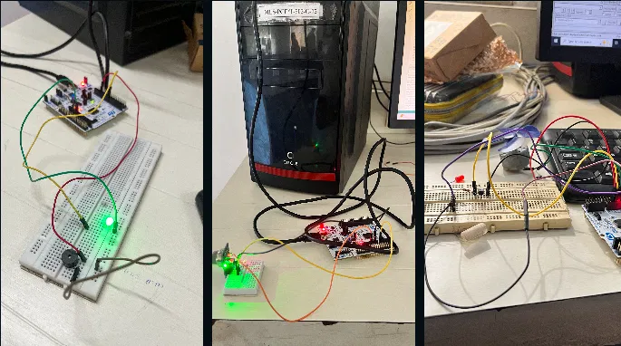

STM32 Experiments
A practical collection of STM32 embedded experiments focused on microcontroller peripherals, GPIO, firmware and hardware interfacing.
Project overview
This project is a collection of practical STM32 experiments rather than one single application. The purpose was to build familiarity with the STM32 development workflow and understand how embedded firmware interacts with physical electronics.
The experiments involve writing embedded C firmware, configuring microcontroller resources and connecting external components to the MCU. The work emphasises the repeated cycle of wiring, programming, testing, observing hardware behaviour and debugging.
The supplied project collage documents several of these practical setups and shows the hardware-oriented nature of the work.
System architecture & technical focus
MICROCONTROLLER
STM32 used as the embedded processing platform.
FIRMWARE
Embedded C used to configure and control microcontroller peripherals and GPIO.
HARDWARE
Breadboard-based circuits and peripheral components used for hands-on testing.
DEBUGGING
Experiments used iterative firmware and wiring changes to verify expected hardware behaviour.
Work performed
- Set up STM32 development and hardware test circuits.
- Worked with GPIO and peripheral configuration.
- Developed embedded C firmware for practical experiments.
- Connected external components to the STM32 and tested their response.
- Used breadboard prototypes to quickly change and validate circuits.
- Debugged firmware and wiring issues during experimentation.
- Built familiarity with the complete embedded workflow from code to physical hardware.
Technology stack
Project media
